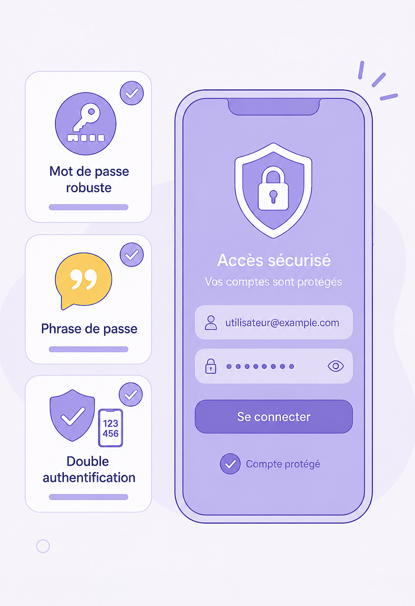

Verrouiller son appareil
Identifier et appliquer les protections de base d'un appareil : verrouillage, code solide, mises à jour.

Le téléphone trouvé sur un banc
Réfléchissez en équipe avant d'ouvrir la réponse.
Voir ce qui est possible en 10 minutes
- Lire les mails et SMS — donc recevoir les codes de la banque ;
- accéder à toutes les photos ;
- cliquer sur « mot de passe oublié » et prendre les comptes un par un (la réinitialisation passe par le mail ou le SMS !) ;
- écrire aux proches en se faisant passer pour la personne ;
- payer sans contact avec le téléphone.
Testez les différentes protections sur ce téléphone d'entraînement. Pour chacune, vous verrez sa solidité et les pièges classiques. N'utilisez jamais votre vrai code — inventez.
Choisissez une protection à tester
Sans verrou
Le téléphone est ouvert au premier venu : mails, banque, proches, paiement sans contact.
Tout ce que vous avez listé dans « le téléphone trouvé » devient possible, tout de suite.
Schéma de déverrouillage
Touchez au moins 4 points dans l'ordre de votre schéma, puis testez.
Code à 4 chiffres
Composez un code d'entraînement (pas votre vrai code !), puis testez.
Empreinte ou visage
Posez le doigt (façon capteur) :
La hiérarchie des verrous
Pratique et sûr au quotidien. Le code de secours doit être bon lui aussi — c'est lui la vraie porte.
1 000 000 de combinaisons. Le meilleur rapport effort / protection.
Correct, mais 6 chiffres font 100 fois mieux pour le même effort de mémoire.
1234, 0000, date de naissance, schéma en L ou en Z — testés en premier par les curieux comme par les fraudeurs.
Les mises à jour — pourquoi on les fait
Une mise à jour, c'est le serrurier qui vient réparer une serrure dont les cambrioleurs connaissent déjà le défaut. Retarder, c'est laisser la faille ouverte.
Sur les tablettes de la salle, un écran indique « Cet iPad est supervisé et géré par Le Forem » : ici, un service informatique s'en occupe. À la maison, le service informatique, c'est vous. En entreprise, votre futur employeur aura peut-être le même dispositif sur le matériel professionnel.
Et sur votre appareil ?
Chacun, sur son propre téléphone, en privé — personne ne montre son écran, on lève juste le pouce quand c'est vérifié :
- Un verrouillage est-il actif ?
- Quel est le délai de verrouillage automatique ?
- Une mise à jour est-elle en attente ?
Cochez ce qui est déjà en place chez vous, puis choisissez UNE action à faire ce soir.